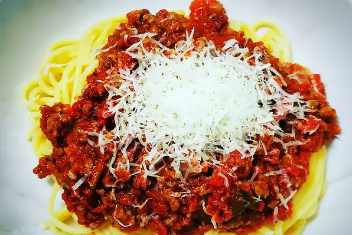

Ein schönes Spaghettirezept!

Anleitung
- Leicht gesalzenes Wasser zum Kochen bringen. Spaghetti im Wasser kochen bis sie bissfest sind, ca. 12 Minuten und anschließend abgießen.
- Olivenöl in einer kleinen Pfanne erhitzen. Hackfleisch anbraten, Zwiebeln, Karotten, Knoblauch und Oregano hinzufügen.
- Balsamicoessig hinzufügen und verkochen lassen. Passierte Tomaten und Tomatenmark hinzufügen und mit Salz und Pfeffer abschmecken. Basilikum hinzufügen.
- Spaghetti mit Bolognesesauce servieren und Parmesan darüberstreuen.
Zutaten
- Spaghetti
- 2 Esslöffel Olivenöl
- Speck
- 1 große Zwiebel
- 1 Karotte
- 1 Teelöffel Oregano
- 3 Knoblauchzehen
- 1 Pfund Hackfleisch
- 2 Esslöffel Balsamicoessig
- 2 Dosen passierte Tomaten
- 2 Esslöffel Tomatenmark
- Salz und Pfeffer
- 2 Esslöffel Basilikum
- frisch geraspelter Parmesan